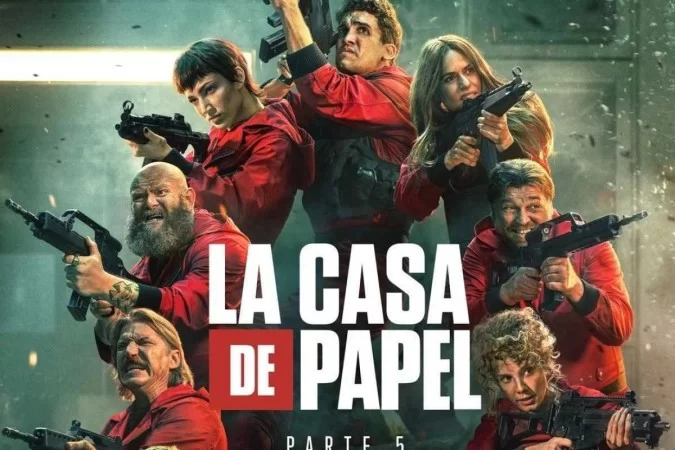
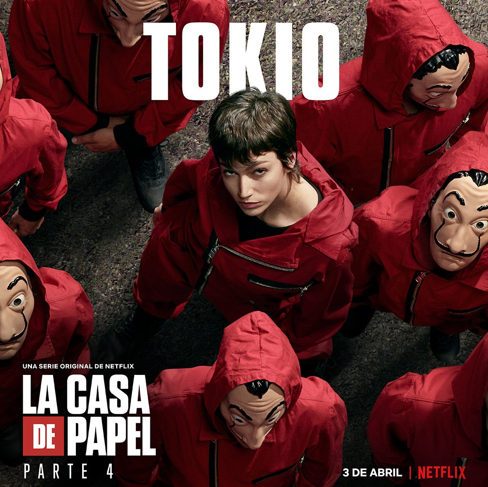
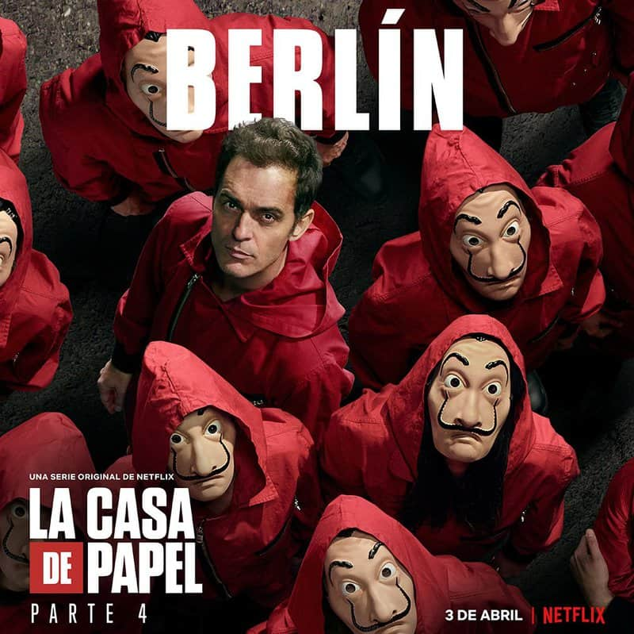
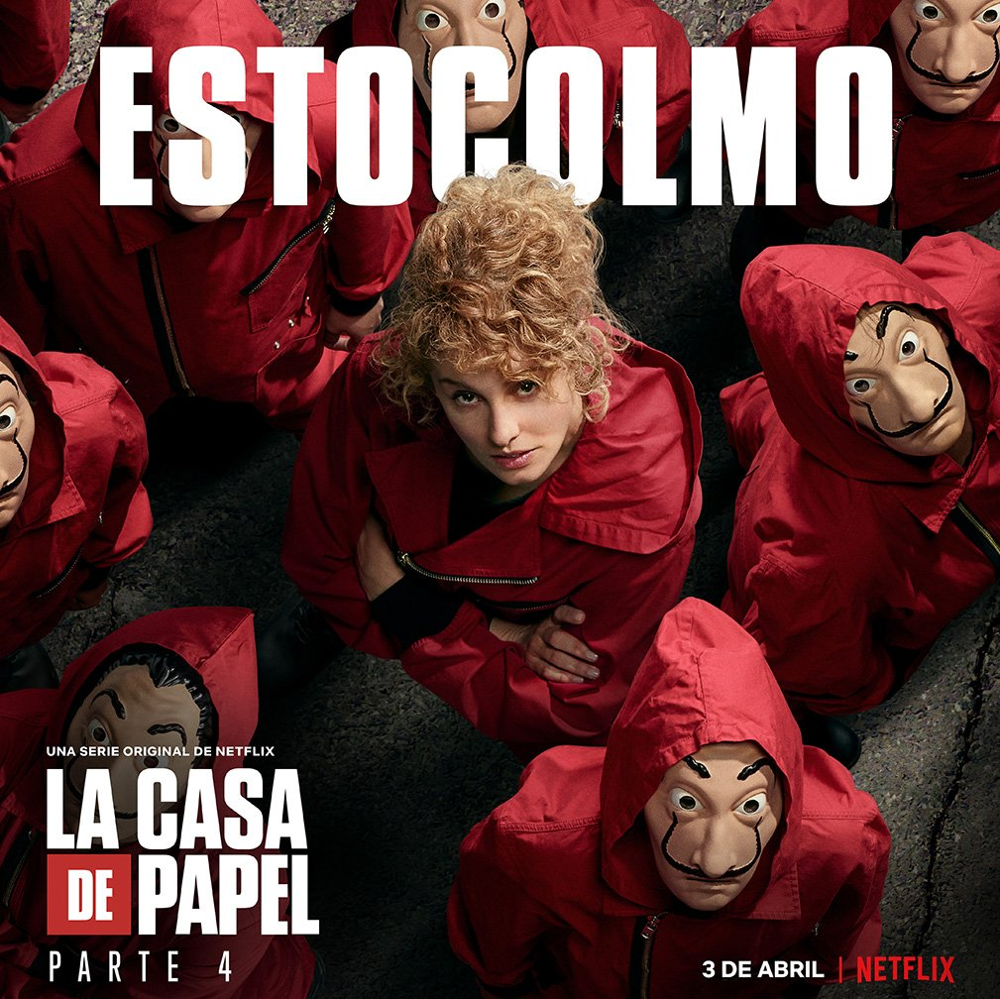
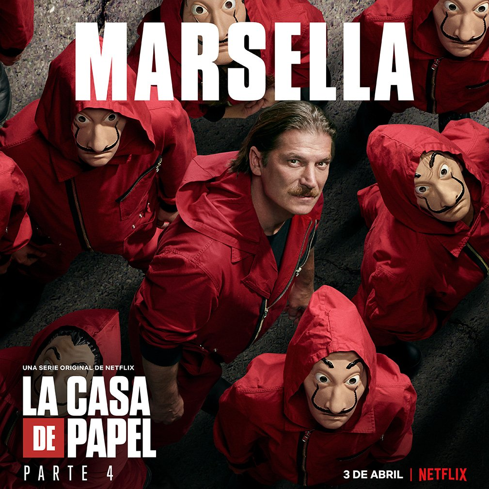

Agora que voces já conhem um pouco a série, vamos ver um pouco dos personagens.


Tóquio é a protagonista de fato da série La Casa de Papel, da Netflix, interpretada por Úrsula Corberó. Tóquio é uma narradora pouco confiável e uma assaltante em fuga vigiada pelo Professor.
O Professor é o mestre dos assaltos à Casa da Moeda e ao Banco da Espanha e o irmão de Berlim na série La casa de papel.

Berlim era o segundo comandante do assalto à Casa da Moeda da Espanha, o idealizador do roubo ao Banco da Espanha e o irmão do Professor.
Ela atua como gerente de qualidade do grupo, sendo responsável pela impressão de dinheiro na Casa da Moeda da Espanha nas partes 1 e 2 e supervisionando o derretimento do ouro no Banco da Espanha nas partes 3 e 4.
O misterioso parceiro de Berlim apresentado na Parte 3. Engenheiro argentino com aspirações revolucionárias, seu verdadeiro nome é Martín Berrote e ele assume a liderança do grupo nesse segundo golpe.
Ele foi o a causa do segundo assalto
Ela era a inspetora do Corpo de Polícia Nacional encarregada da investigação do assalto à Casa da Moeda, mas foi afastada do caso por seu envolvimento com o Professor.
O impulsivo filho de Moscou. Seu verdadeiro nome é Ricardo Ramos e foi escalado para o assalto à Casa da Moeda a pedido do seu pai, que queria tirá-lo das ruas.

Ela era refém, se apaixonou por Denver, e virou ladra.

O ex-soldado que participa do assalto ao Banco Central da Espanha. Apesar de entrar para o time apenas no segundo assalto, Marselha já conhecia o Professor, Berlim, Bogotá e Palermo. Na parte 3 ele fica encarregado de assessorar a estratégia externa do assalto com o Professor e Lisboa.
Como muita gente previa, Alicia Sierra (Najwa Nimri) não está convencida a virar a casaca e ajudar o Professor (Álvaro Morte). Enquanto o Professor está desesperado por causa da morte de Tóquio, Alicia aproveita para fugir, usando um dos carros do bando